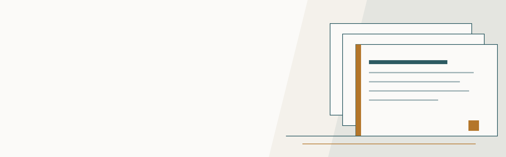

Пациентам
Всё до визита: права, гарантии, правила, оплата и подготовка. Сгруппировано по вопросам пациента, а не по ведомственной структуре.
Быстрый маршрут
С чего начать
Выберите ситуацию — внутри короткий ответ и следующий шаг.
Нужен человек
Позвоните в клинику
Администратор подскажет, куда перейти и как записаться на приём.
До приёма
Права и документы
Проверяемые сведения: законодательные гарантии, правила и документы клиники.